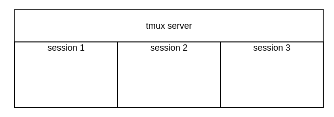
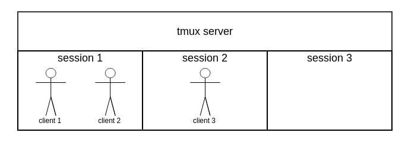
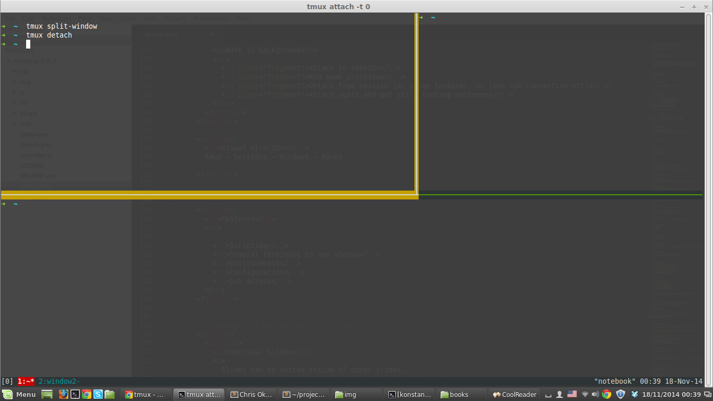

Created by @kkolotyuk
I need more consoles!
“tmux is a terminal multiplexer.”
“A terminal multiplexer is a software application that can be used to multiplex several virtual consoles, allowing a user to access multiple separate terminal sessions inside a single terminal window or remote terminal session.”
Tmux has client-server architecture
$ tmux ls
failed to connect to server
Start tmux server
$ tmux // start server, create default session
// and attache to it
Commands
$ tmux detach // detach from session (back to usual terminal)
$ tmux new-session -s foo -d // create new session with name "foo"
// and don't attach to it
$ tmux new-session -s bam -d // create new session with name "bam"
// and don't attach to it
$ tmux ls // list of sessions
0: 1 windows (created Sun Nov 16 15:28:53 2014) [168x41]
bam: 1 windows (created Sun Nov 16 15:29:53 2014) [168x41]
foo: 1 windows (created Sun Nov 16 23:49:49 2014) [168x41]

$ tmux attach -t 0 // attach to session with name 0
$ tmux attach -t 0 // !another client! attach to session with name 0
$ tmux attach -t foo // !another client! attach to session with name foo

Work in background
Very usufull with SSH connection!
Tmux → Sessions → Windows → Panes
Very usufull with SSH connection!
[session]:[window].[pane]
$ tmux send-keys -t development:1.2 'cd ~/devproject' C-m
$ tmux kill-session -t foo
Prefix + key
Prefix + :
/etc/tmux.conf or ~/.tmux.conf
List of commands
# Bind prefix to C-a
set -g prefix C-a
unbind C-b
# Bind spliting panes by | and -
bind | split-window -h
bind - split-window -v
# 256 colors
set -g default-terminal "screen-256color"
# Enable Vim keys
setw -g mode-keys vi
# Status bar style
set -g status-fg white
set -g status-bg black
# Window style
setw -g window-status-fg cyan
setw -g window-status-bg default
Configure custom environment for each project:
$ tmux -f project.conf attach
source-file ~/.tmux.conf
# Create new session with name "ipm" and one window "frontend"
new-session -s ipm -n frontend -d
# Split window
split-window -h -t 1
split-window -v -t 1
split-window -v -t 2
# Open dirs and run rails server
send-keys -t ipm:frontend.1 'cd ~/projects/ipm-ui' C-m
send-keys -t ipm:frontend.1 'rails s' C-m
send-keys -t ipm:frontend.2 'cd ~/projects/ipm-ui' C-m
send-keys -t ipm:frontend.3 'cd ~/projects/ipm-ui' C-m
send-keys -t ipm:frontend.4 'cd ~/projects/ipm-ui' C-m
# Create window with name "backend"
new-window -n backend -c ~/projects/ipm-backend
split-window -h -t 1 -c ~/projects/ipm-backend
split-window -v -t 1 -c ~/projects/ipm-backend
split-window -v -t 2 -c ~/projects/ipm-backend
# Open dirs, run python server and workers
send-keys -t ipm:backend.1 '. env/bin/activate' C-m
send-keys -t ipm:backend.1 './runserver.py' C-m
send-keys -t ipm:backend.2 '. env/bin/activate' C-m
send-keys -t ipm:backend.2 './runworker.py' C-m
# SSH window
new-window -n ssh
# Postgres window
new-window -n psql
send-keys -t ipm:psql 'psql ipm ipm' C-m
$ add-apt-repository ppa:pi-rho/dev
$ apt-get update
$ apt-get install tmux
This presentation was made with reveal.js.
reveal.js + github pages